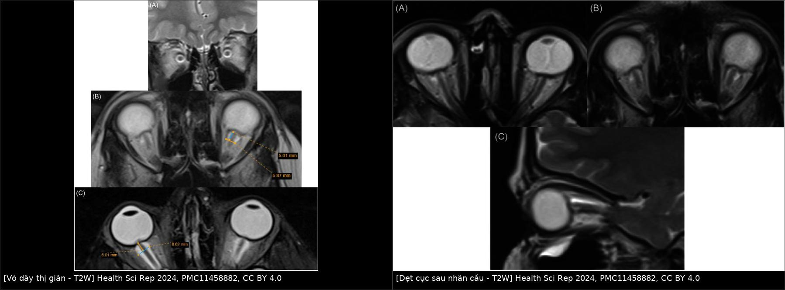
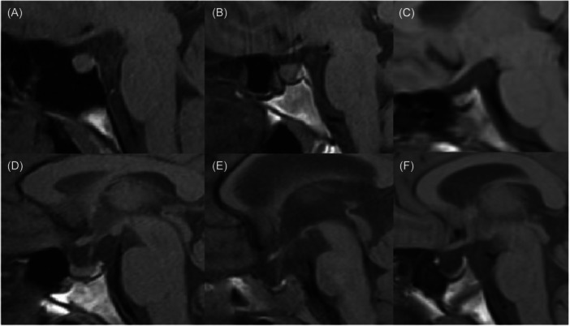
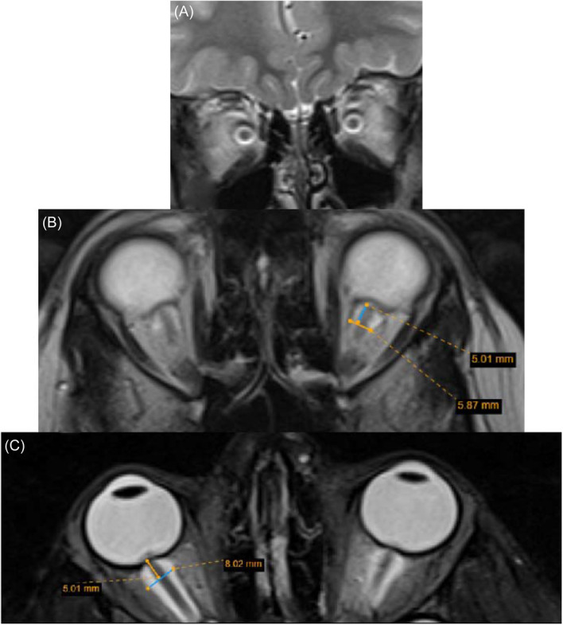
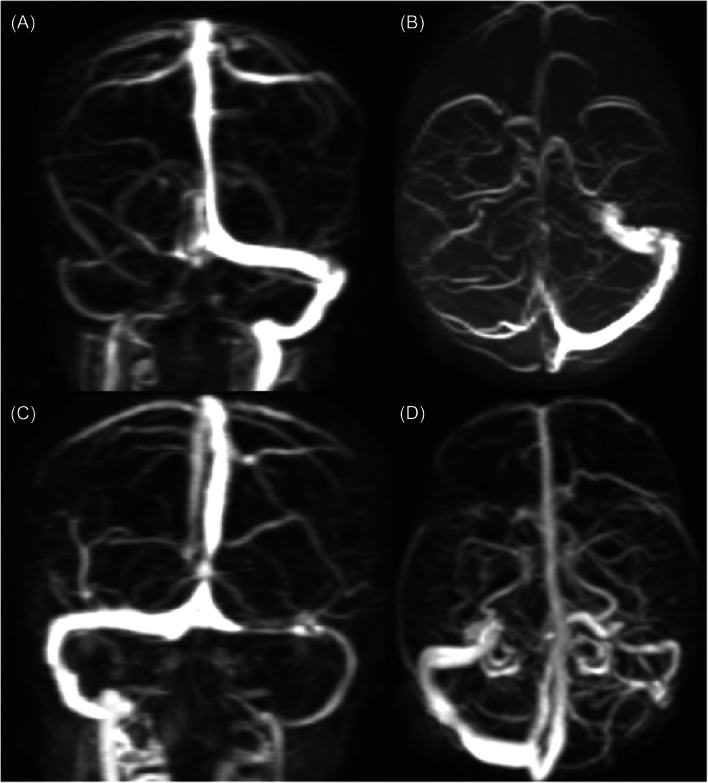
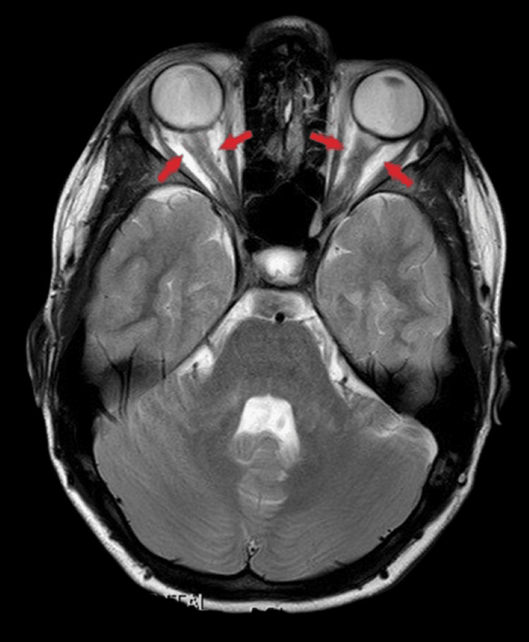

6194 — Tăng áp lực nội sọ vô căn ở trẻ: bộ dấu hiệu MRI–MRV, ngưỡng ONSD theo tuổi & khi nào OCT đủ theo dõi / Paediatric idiopathic intracranial hypertension
Tags: pattern:gian-vo-day-thi pattern:tuyen-yen-rong pattern:hep-xoang-ngang pattern:phu-gai-thi vung:gai-thi vung:than-kinh-thi vung:nao score:ONSD protocol:MRI-hoc-mat protocol:MRV anatomy:xoang-tinh-mach-ngang
Mức chắc chắn (certainty): tổng hợp y văn (literature synthesis) — ghép 612 ca IIH trong 14 năm tại Victoria (108 trẻ, PMC13264580), 300 ca < 36 tháng (tổng quan hệ thống, PMC12296176), 62 trẻ IIH so với 62 trẻ chứng (Pediatr Radiol 2026, PMC13357526), 44 trẻ 7–17 tuổi theo dõi OCT 1 năm (PMC12896765), 81 trẻ theo dõi 10 năm (PMC13216665), tổng quan dấu hiệu MRI nhi (PMC11458882), tổng quan béo phì – IIH nhi (PMC12840101), cùng ca nguyên văn có ảnh (PMC12863709) và hình ảnh dấu hiệu từ PMC12133799. Không có thử nghiệm ngẫu nhiên nào ở trẻ về ngưỡng điều trị — chỗ suy luận được ghi rõ.
Câu chốt: ở trẻ, IIH không phải "người lớn thu nhỏ". Ba khác biệt quyết định cách đọc phim: (1) trẻ < 36 tháng không có phù gai ở 49,0%** ca, và dấu hiệu hay gặp nhất là **thóp căng (67,7%)** chứ không phải nhìn gai thị (PMC12296176); **(2)** ngưỡng áp lực mở **thay đổi theo tuổi** — sơ sinh **> 7,6, nhũ nhi > 8,2, trẻ nhỏ > 9,5 cm H₂O (đề xuất 2025, PMC12296176), so với > 25 cm H₂O ở trẻ lớn/người lớn (PMC12840101); (3) hẹp xoang tĩnh mạch ngang hiếm hơn nhiều ở trẻ trước dậy thì (67%) so với trẻ 11–17 tuổi (93%) và người lớn (96%, PMC11458882) — nên MRV bình thường ở trẻ nhỏ không loại trừ IIH. Chẩn đoán vẫn là áp lực mở + loại trừ nguyên nhân, hình ảnh chỉ hỗ trợ.
Phân vai với bài khác: 1777 dùng IIH như cơ chế của rò dịch não tủy tự phát ở người lớn; 430/433/434 phủ đường thị giác và phù gai. Bài này chỉ đi sâu bộ dấu hiệu MRI/MRV + ngưỡng theo tuổi + lịch theo dõi mắt ở trẻ.
1. Tổng quan bệnh học – cơ chế hình ảnh (TẠI SAO áp lực lại để lại dấu vết)
1.1 Dịch tễ — con số đang tăng
- Trẻ em Victoria (Úc), 2010–2023: tỷ lệ mới mắc tăng từ 0,33/100.000 lên 1,01/100.000 (gấp 3 lần); trẻ có tuổi trung bình 12,4 ± 3,5, 76% nữ, BMI 31,9 ± 8,4 kg/m²; đau đầu là triệu chứng hay gặp nhất (86%), và nhìn đôi / liệt dây VI gặp ở trẻ nhiều hơn người lớn (PMC13264580).
- Trẻ < 36 tháng (300 ca): nam 48,3% — tức mất hẳn ưu thế nữ của tuổi dậy thì; phù gai chỉ 23,0%, không phù gai 49,0%; thóp căng 67,7%, kích thích 34,3%, nôn 33,0%, sốt 18,3%; thuốc là yếu tố khởi phát số 1 (35,3%), nhiễm trùng 15,0%; áp lực mở trung bình 35,1 cm H₂O (9,5–77) (PMC12296176).
1.2 TẠI SAO mỗi dấu hiệu xuất hiện — giải thích bằng cơ học, không học vẹt
Khoang dưới nhện quanh dây thị thông trực tiếp với khoang dưới nhện nội sọ. Vì vậy mọi thay đổi áp lực dịch não tủy đều truyền ra sau nhãn cầu theo 4 đường cơ học:
| Dấu hiệu | Cơ chế | Vì sao thấy trên chuỗi xung đó |
|---|---|---|
| Giãn vỏ dây thị (ONSD ↑) | Vỏ dây thị là khoang dịch tuân thủ (compliance cao) → áp lực cao đẩy dịch vào, vỏ căng ra như bóng | T2W: dịch sáng → vòng sáng dày quanh dây thị tối; đo trên T2 axial/coronal, 5 mm sau cực sau nhãn cầu |
| Dẹt cực sau nhãn cầu | Áp lực truyền dọc vỏ tới củng mạc sau → đẩy lõm thành sau nhãn cầu vào trong | Mất độ lồi sinh lý của cực sau trên T2 axial/sagittal; đây là dấu muộn hơn giãn vỏ |
| Dây thị ngoằn ngoèo | Dây thị dài ra tương đối trong vỏ đã giãn → thừa chiều dài, gấp khúc | Mất thấy đoạn giữa dây thị trên T1/T2 axial; hình chữ S trên sagittal |
| Tuyến yên rỗng | Xung áp lực dịch não tủy lâu ngày đẩy khoang trên yên lấn vào hố yên, ép tuyến | T1 sagittal: khoang dịch (tối) chiếm dần hố yên; phân độ theo tỷ lệ chiều cao (mục 2) |
| Hẹp xoang tĩnh mạch ngang | Áp lực nội sọ cao → chênh áp xuyên thành giữa lòng xoang và khoang dưới nhện → xoang bị ép; đồng thời hạt nhện to ra | MRV: hẹp đối xứng hai bên, bờ nhẵn, không có khuyết thuốc trong lòng — khác huyết khối |
- Điều KHÔNG thấy (và đó là điểm chốt): DWI/ADC không tăng trong IIH nhi — tức không có phù não (PMC11458882). Nếu ADC giảm lan tỏa → nghĩ nguyên nhân khác (thiếu máu, ngộ độc, viêm).
- Vì sao hình ảnh chỉ "hỗ trợ": mọi dấu hiệu trên đều là hệ quả của áp lực cao kéo dài, không phải nguyên nhân; trẻ mới khởi phát có thể MRI gần bình thường, và ngược lại người béo, rỗng yên sinh lý có dấu hiệu dương tính giả.
1.3 Ngưỡng định lượng phải nhớ
| Mốc | Ngưỡng | Nguồn |
|---|---|---|
| Áp lực mở, sơ sinh | > 7,6 cm H₂O | PMC12296176 (đề xuất cho < 36 tháng) |
| Áp lực mở, nhũ nhi | > 8,2 cm H₂O | PMC12296176 |
| Áp lực mở, trẻ nhỏ (toddler) | > 9,5 cm H₂O | PMC12296176 |
| Áp lực mở, trẻ lớn/người lớn | > 25 cm H₂O | PMC12840101 |
| ONSD — trẻ < 1 tuổi | > 4,0 mm là bất thường | PMC11458882 |
| ONSD — trẻ > 1 tuổi | > 4,5 mm là bất thường | PMC11458882 |
| ONSD — người lớn (đối chiếu) | > 5,6 mm bất thường; > 6 mm đặc hiệu hơn | PMC12133799 |
| Vị trí đo ONSD | 5 mm sau cực sau nhãn cầu, trên T2 axial không/ có fat-sat | PMC11458882 |
| Tuyến yên rỗng — độ II (nhẹ) | giảm chiều cao tuyến < 1/3 chiều cao hố yên | PMC11458882 |
| Tuyến yên rỗng — độ III (vừa) | khoang rỗng 1/3–2/3 | PMC11458882 |
| Tuyến yên rỗng — độ IV (nặng) | khoang rỗng > 2/3 | PMC11458882 |
| Hẹp xoang ngang theo tuổi | < 11 tuổi: 67%** · **11–17 tuổi: 93%** · **> 17 tuổi: 96% | PMC11458882 |
| RNFL trên OCT (IIH so với chứng) | 133,1 ± 18,5 µm so với 113,1 ± 8,7 µm | PMC12896765 |
2. Mẫu hình + chẩn đoán phân biệt theo tuổi (gamut)
2.1 Năm dấu hiệu chính (major) + ba dấu hiệu phụ (minor)
Major — đọc theo thứ tự "vỏ → cầu → dây → yên → xoang":
- Giãn vỏ dây thị (ONSD vượt ngưỡng tuổi) — nhạy nhất, dễ đo nhất.
- Dẹt cực sau nhãn cầu — đặc hiệu hơn, xuất hiện muộn.
- Dây thị ngoằn ngoèo / mất đoạn giữa dây thị.
- Tuyến yên rỗng một phần (độ II–IV).
- Hẹp xoang tĩnh mạch ngang hai bên trên MRV.
Minor (kém tin cậy, chỉ dùng để cộng điểm nghi ngờ): giãn dài Meckel's cave, sa hạnh nhân tiểu não, não thất khe (slit-like ventricles) — không phải giãn não thất (PMC11458882).
2.2 Gamut theo NHÓM TUỔI — vì hình ảnh khác nhau thật
| Nhóm tuổi | Dấu hiệu "kỳ vọng" | Bẫy riêng |
|---|---|---|
| < 12 tháng | Thóp căng, phù gai thường VẮNG; MRI có thể chỉ giãn vỏ dây thị nhẹ | Dễ bỏ vì không có phù gai và không kêu đau đầu; ngưỡng áp lực rất thấp (7,6–8,2) |
| 1–10 tuổi (trước dậy thì) | Giãn vỏ dây thị + dẹt cực sau; hẹp xoang ngang chỉ 67% | MRV bình thường không loại trừ |
| 11–17 tuổi | Bộ dấu hiệu gần giống người lớn; hẹp xoang ngang 93%; BMI cao | Dễ nhầm IIH với đau đầu do béo phì/OSA |
2.3 Gamut theo bối cảnh lâm sàng (trẻ đau đầu + phù gai)
- IIH — MRI không có tổn thương, không giãn não thất, MRV có/không hẹp xoang; áp lực mở vượt ngưỡng tuổi.
- Huyết khối xoang tĩnh mạch não — khuyết thuốc trong lòng xoang, không phải hẹp bờ nhẵn; khởi phát cấp, có yếu tố nguy cơ (nhiễm trùng tai/xoang, thuốc tránh thai, mất nước).
- Viêm màng bọc dây thị (optic perineuritis) — dấu tram-track: vỏ dây thị ngấm thuốc thành vòng, dây thị bên trong không ngấm; kẻ bắt chước IIH rõ nhất (ca PMC12863709).
- Viêm dây thị (optic neuritis) — thân dây thị ngấm thuốc, vỏ không giãn; đau khi liếc, giảm thị lực nhanh, MS/NMOSD/MOGAD.
- U/thâm nhiễm màng não (leptomeningeal carcinomatosis, lao màng não) — ngấm thuốc màng não lan tỏa, dày gốc dây thị không đối xứng.
- Bệnh mắt do tuyến giáp (TED) — thân cơ to, chừa gân, không giãn vỏ dây thị đơn thuần (bài 421).
- Drusen gai thị — phù gai giả; siêu âm B/Autofluorescence/OCT EDI; không có dấu hiệu nội sọ (bài 433).
- Craniosynostosis / hẹp sọ — hộp sọ nhỏ, khớp sọ đóng sớm, giãn não thất thường kèm.
3. Bảng so sánh phân biệt (ma trận đối chiếu)
| Thực thể (entity) | Hình ảnh điển hình | Chốt vào (rule-in) | Chốt loại (rule-out) | Gợi ý xác nhận |
|---|---|---|---|---|
| IIH | ONSD vượt ngưỡng tuổi, dẹt cực sau, tuyến yên rỗng, hẹp xoang ngang bờ nhẵn đối xứng | ONSD > 4,5 mm (> 1 tuổi) + tuyến yên rỗng + MRV hẹp bờ nhẵn + áp lực mở vượt ngưỡng tuổi | Khuyết thuốc trong lòng xoang → huyết khối; thân dây thị ngấm thuốc → viêm dây thị; có tổn thương nhu mô/giãn não thất → nguyên nhân khác | MRI + MRV, đo ONSD 5 mm sau nhãn cầu, áp lực mở, OCT |
| Huyết khối xoang ngang | Khuyết thuốc lòng xoang trên CTV/MRV có cản quang, bờ không đều, có thể lan vào xoang sigma | Khuyết thuốc trong lòng + khởi phát cấp + yếu tố nguy cơ | Hẹp bờ nhẵn, đối xứng, hết sau chọc dò → IIH | CTV/MRV có cản quang, D-dimer, kháng đông |
| Viêm màng bọc dây thị | Dấu tram-track (vỏ ngấm thuốc) và doughnut sign trên coronal | Vỏ dây thị ngấm thuốc hình vòng, thân dây không ngấm | Vỏ giãn nhưng không ngấm thuốc → IIH | MRI hốc mắt T1 fat-sat sau tiêm; đáp ứng corticoid |
| Viêm dây thị | Thân dây thị tăng tín hiệu T2/ngấm thuốc, dây hơi to | Ngấm thuốc THÂN dây + đau khi liếc + giảm thị lực nhanh | Vỏ giãn đơn thuần, thân dây bình thường → không phải viêm dây thị | MRI hốc mắt, OCT, kháng thể MOG/NMO |
| Drusen gai thị | Gai thị lồi nhưng không có dấu hiệu nội sọ; drusen tăng âm/huỳnh quang tự động | Drusen thấy trên siêu âm/OCT EDI + MRI/MRV bình thường | Có giãn vỏ dây thị + tuyến yên rỗng → nghi IIH thật | Siêu âm mắt, OCT EDI, chụp MRI |
| TED | Thân cơ to, chừa gân, proptosis, không giãn vỏ dây thị đơn thuần | Cơ to chừa gân + bệnh tuyến giáp | Cơ bình thường → không phải TED | MRI hốc mắt, TSH/TRAb |
| U màng não/thâm nhiễm | Ngấm thuốc màng não lan tỏa/không đối xứng, dày gốc dây thị | Ngấm thuốc màng não lan + tổn thương nhu mô | Màng não mỏng đều, không ngấm → loại | MRI + tế bào học dịch não tủy |

Trái: vỏ dây thị giãn — vòng dịch sáng (T2) dày quanh dây thị hai bên, kèm số đo 5,01/5,87/8,02 mm đặt đúng 5 mm sau cực sau nhãn cầu. Phải: mất độ lồi sinh lý của cực sau nhãn cầu (dẹt cực sau). Cả hai: Health Sci Rep 2024, PMC11458882, CC BY 4.0. Ảnh ghép letterbox, giữ nguyên tỷ lệ.Phân độ tuyến yên rỗng (dùng được cho mọi lứa tuổi)
| Độ | Mô tả | Ý nghĩa |
|---|---|---|
| I — bình thường | mặt trên tuyến lồi hoặc phẳng | Không gợi ý |
| II — nhẹ | giảm chiều cao tuyến < 1/3 hố yên | Gặp ở người béo, sinh lý; cộng bối cảnh |
| III — vừa | khoang rỗng 1/3–2/3 | Nghi IIH nếu kèm dấu hiệu mắt |
| IV — nặng | khoang rỗng > 2/3 | Rất gợi ý tăng áp lực kéo dài |

Sáu mặt cắt T1 sagittal qua hố yên: (A–B) mặt trên tuyến lồi/phẳng — bình thường; (C) độ II; (D) độ III; (E–F) độ IV — khoang dịch chiếm > 2/3 hố yên. Nguồn: Health Sci Rep 2024, PMC11458882, CC BY 4.0.4. Protocol chụp + hệ phân độ/điểm chuẩn hóa
4.1 Trình tự bắt buộc: chụp trước, chọc dò sau
- Bước 1 — MRI sọ + hốc mắt (không cản quang trước): T1 sagittal (hố yên), T2 axial + coronal lát 1 mm qua hốc mắt, FLAIR, DWI/ADC. Mục đích: loại trừ u, giãn não thất, huyết khối, tổn thương nhu mô — và đo ONSD.
- Bước 2 — MRV (TOF 2D/3D hoặc MRV có cản quang): tìm hẹp xoang ngang hai bên và loại trừ huyết khối. Ở trẻ < 11 tuổi, nhớ 67% ca IIH không có hẹp — MRV bình thường không loại trừ.
- Bước 3 — chọc dò tủy sống đo áp lực mở, chỉ sau khi đã loại trừ khối choán chỗ; so với ngưỡng theo tuổi (7,6 / 8,2 / 9,5 / 25 cm H₂O).
- Bước 4 — mắt: đáy mắt + OCT RNFL (nếu trẻ hợp tác, thường từ tuổi tiểu học). RNFL 133,1 µm so với 113,1 µm ở chứng; phần lớn dày lên hết sau 3 tháng điều trị (PMC12896765) → OCT là công cụ theo dõi, không phải chẩn đoán.
4.2 Đo ONSD đúng cách (3 lỗi hay gặp)
- Đo 5 mm sau cực sau nhãn cầu — không đo sát cực sau (vỏ mỏng, số nhỏ giả) và không đo xa (dây thị đã ngoằn ngoèo).
- Đo vuông góc với trục dây thị, lấy đường kính ngoài–ngoài của vòng dịch sáng, không đo phần dây thị tối bên trong.
- Dùng ngưỡng theo tuổi (4,0 mm cho < 1 tuổi; 4,5 mm cho > 1 tuổi) — áp ngưỡng người lớn (5,6 mm) cho trẻ sẽ bỏ sót rất nhiều ca.
flowchart TD
A[Trẻ đau đầu + nghi tăng áp lực nội sọ] --> B[MRI sọ + hốc mắt lát 1 mm]
B --> C{Có u, giãn não thất, huyết khối hay tổn thương nhu mô?}
C -->|Có| D[Điều trị nguyên nhân — không phải IIH]
C -->|Không| E[Đo ONSD 5 mm sau nhãn cầu]
E --> F[MRV: hẹp xoang ngang?]
F --> G[Chọc dò tủy sống: áp lực mở theo ngưỡng tuổi]
G --> H{Vượt ngưỡng tuổi + dịch não tủy bình thường?}
H -->|Không| I[Tìm nguyên nhân khác — đau đầu nguyên phát, drusen, TED]
H -->|Có| J[IIH: OCT RNFL + đáy mắt, theo dõi 1-3-6-12 tháng]
J --> K{Thị lực giảm hoặc RNFL không giảm sau 3 tháng?}
K -->|Có| L[Leo thang: acetazolamide liều cao, cân nhắc stent xoang / shunt]
K -->|Không| M[Giảm cân + theo dõi OCT]
4.3 Điều trị — bằng chứng ở trẻ mỏng hơn người lớn
- < 36 tháng (300 ca): chọc dò lặp 72,7%, ngừng thuốc khởi phát 26,3%, acetazolamide 18,7%, corticoid 7,7%, chỉ 3,0% cần shunt — đa số tự khỏi (PMC12296176).
- Giảm cân là điều trị duy nhất tác động nguyên nhân ở trẻ béo: trong nhóm dậy thì, phẫu thuật giảm béo được AAP cân nhắc từ 13 tuổi khi BMI > 35 kg/m² (hoặc > 120% bách phân vị 95) (PMC12840101).
- Hẹp xoang ngang + IIH kháng trị: stent xoang là lựa chọn ở trung tâm chuyên khoa; chưa có ngưỡng hẹp được chuẩn hóa cho trẻ (PMC11458882) — quyết định theo thị lực đe dọa, không theo % hẹp.
5. Biến thể bình thường và cạm bẫy
- Tuyến yên rỗng sinh lý: gặp ở người béo, sau sinh, cao tuổi — độ II đơn độc không đủ gợi ý IIH.
- Hẹp xoang ngang "chảy" (flow-related): hẹp bờ nhẵn, đối xứng, có thể giảm sau khi hạ áp lực bằng chọc dò → đừng gọi là hẹp cố định cần stent ngay.
- Hạt nhện (arachnoid granulation): lõm bờ nhẵn vào lòng xoang, không chặn dòng — khác huyết khối (khuyết thuốc) và khác hẹp do chèn ép.
- ONSD bất đối xứng: đo cả hai bên, lấy bên lớn; bất đối xứng mạnh (> 1 mm) gợi ý nguyên nhân tại mắt (viêm, u) hơn là IIH.
- "Giãn não thất khe" không phải giãn não thất: IIH có não thất nhỏ/khe, không bao giờ giãn — nếu giãn, nghĩ tắc nghẽn dịch não tủy.
- Cạm bẫy chết người — chọc dò trước khi chụp: ở trẻ có khối choán chỗ hoặc giãn não thất, chọc dò có thể gây tụt kẹt não. Luôn MRI trước, chọc dò sau.
- Cạm bẫy "không phù gai = không IIH": ở trẻ < 36 tháng, 49,0% ca không có phù gai (PMC12296176). Bỏ sót → mất thị lực không hồi phục; ngược lại, coi mọi phù gai là IIH → bỏ sót u/huyết khối.
- Cạm bẫy "chẩn đoán bằng hình ảnh": IIH là chẩn đoán áp lực, không phải chẩn đoán ảnh; ca 1777 có BMI 42,6 nhưng MRI không có dấu hiệu IIH và áp lực mở bình thường — và ngược lại, vá rò mà không hạ áp lực = tái rò.
6. Tự lượng giá — Blind Quiz ngay trên trang tĩnh
Ca 1 — Bé gái 9 tuổi, đau đầu 3 tuần, nhìn đôi khi mệt. Nhìn ảnh trước, mô tả trước.

- Gợi ý lâm sàng: không sốt, không chấn thương, đáy mắt hai bên phù nhẹ.
- Câu hỏi: Dấu hiệu chính là gì? Số đo đặt ở đâu? Ngưỡng bất thường cho tuổi này? Ba chẩn đoán phân biệt?
Bấm để hiện đáp án (findings + chẩn đoán)
- Dấu hiệu: vòng dịch sáng (T2) dày quanh dây thị hai bên — giãn vỏ dây thị; (B) số đo 5,01 / 5,87 mm, (C) 5,01 / 8,02 mm, đặt 5 mm sau cực sau nhãn cầu.
- Chẩn đoán: IIH — với trẻ > 1 tuổi, ngưỡng là 4,5 mm; các số đo đều vượt. Cơ chế: khoang dưới nhện quanh dây thị thông với nội sọ nên áp lực cao đẩy dịch vào vỏ.
- Phân biệt: viêm màng bọc dây thị (vỏ ngấm thuốc), viêm dây thị (ngấm thân dây), huyết khối xoang (khuyết thuốc lòng xoang).
- Nguồn ảnh: Health Sci Rep 2024, PMC11458882, CC BY 4.0.
Ca 2 — Bé trai 13 tuổi, béo, đau đầu + ù tai mạch đập. MRV dưới đây.

- Câu hỏi: Bất thường ở đâu? Hẹp này chốt hay hệ quả? Khi nào can thiệp?
Bấm để hiện đáp án
- Dấu hiệu: hẹp hai bên xoang tĩnh mạch ngang, bờ nhẵn, không có khuyết thuốc trong lòng; (A–B) MRV không cản quang, (C–D) MRV có thuốc.
- Chẩn đoán: hẹp xoang ngang do chèn ép trong IIH — ở trẻ 11–17 tuổi gặp 93% (so với 67% ở < 11 tuổi và 96% ở người lớn), nên đây là hệ quả của áp lực, không phải nguyên nhân đơn thuần.
- Khi nào can thiệp: chỉ khi thị lực đe dọa và thất bại điều trị nội; chưa có ngưỡng % hẹp chuẩn hóa cho trẻ.
- Nguồn ảnh: Health Sci Rep 2024, PMC11458882, CC BY 4.0.
Ca 3 — Bé trai 8 tuổi, đau mắt + giảm thị lực 1 tuần, không sốt. MRI T1 sau tiêm qua hốc mắt.

- Câu hỏi: Cấu trúc nào ngấm thuốc? Dấu này tên gì? Vì sao không gọi là IIH đơn thuần?
Bấm để hiện đáp án
- Dấu hiệu: vỏ dây thị hai bên ngấm thuốc thành vòng quanh dây thị (mũi tên đỏ) — dấu tram-track; trên mặt cắt coronal là doughnut sign.
- Chẩn đoán: viêm màng bọc dây thị (optic perineuritis) — ca nguyên văn có đồng thời IIH, nhưng điểm mấu chốt là vỏ ngấm thuốc, khác IIH thuần (vỏ giãn nhưng không ngấm). Xử trí khác: corticoid, không chỉ hạ áp lực.
- Phản biện nguồn: đây là ca IIH + viêm màng bọc dây thị hai bên — hiếm; không được lấy ca này làm hình mẫu "IIH điển hình".
- Nguồn ảnh: Cureus 2026, PMC12863709, CC BY 4.0.
Bài liên quan chéo
- 1777 – Rò dịch não tủy nền sọ tự phát (IIH là cơ chế; vá mà không hạ áp lực → tái rò)
- 433 – Phù đĩa thị vs drusen (phù thật vs giả phù, ONSD)
- 430 – Đường thị giác (giải phẫu, đoạn trong hốc mắt)
- 434 – Teo thị thần kinh thị độc & LHON (hậu quả muộn của phù gai kéo dài)
- 421 – Lồi mắt Graves (cơ to chừa gân — phân biệt hốc mắt)
- 1948 – Co giật sau huyết khối xoang (huyết khối xoang — phân biệt với hẹp do IIH)
Ảnh
images/composite_vo-day-thi-va-det-cau.jpg— ghép đối chiếu ONSD + dẹt cực sau (T2W).images/6194_iih-tre_MRI_PMC11458882-g002-ONSD-CCBY.jpg— ONSD, có số đo.images/6194_iih-tre_MRI_PMC11458882-g005-empty-sella-CCBY.jpg— phân độ tuyến yên rỗng I–IV.images/6194_iih-tre_MRV_PMC11458882-g001-CCBY.jpg— hẹp xoang ngang hai bên.images/6194_iih-tre_MRI_PMC11458882-g003-globe-CCBY.jpg— dẹt cực sau nhãn cầu.images/6194_iih-tre_MRI_PMC11458882-g004-tortuosity-CCBY.jpg— dây thị ngoằn ngoèo.images/6194_iih-tre_MRI_PMC12863709-i03-tram-track-CCBY.jpg— dấu tram-track (kẻ bắt chước).images/6194_iih-tre_OCT_PMC12896765-g006-CCBY.jpg— OCT gai thị theo dõi 12 tháng.
Không dùng để chẩn đoán độc lập khi chưa có người hướng dẫn.